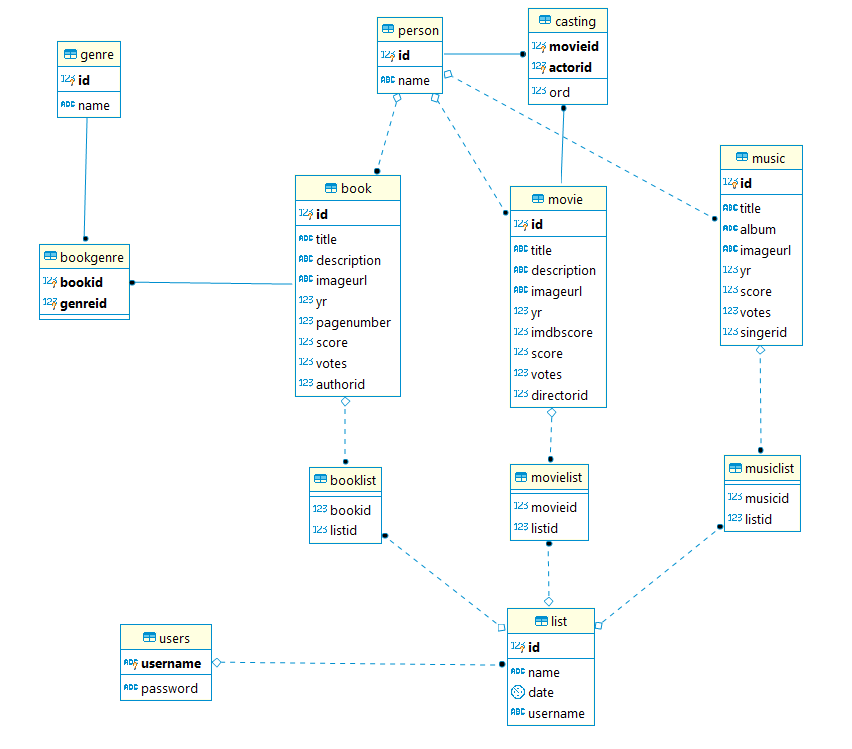
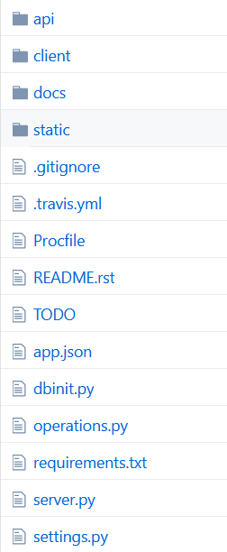

Developer Guide¶
Database Design¶
Our database has three main tables that contain books (Book), movies (Movie) and music (Music). These tables store the specifics of items such as item title, cover image etc. All three tables are in a relation with the Person table. Person table contains all kind of people like actors, authors, directors etc. Additionally Book table has many to many relationship with Genre table. Movie table has a many to many relationship as well. It is connected to Person table through Casting table.
List table stores lists of users that contains all kind of items using Booklist, Movielist, Musiclist tables. User table contains users and it has a one to many relationship with List table (A list belongs to one user).
Code¶
We used Flask, Postgresql and Reactjs in this project. Our files structure can be seen below.
Api folder is the backend service of our project. We connect Reactjs to flask using the api. The api is served at <host address>/api.
Client folder contains our react code. Source code of all the pages you can see are stored here.
operations.py file holds all database operations we use in this project. Such as createUser function below.
def createUser(username, password):
with dbapi2.connect(url) as connection:
with connection.cursor() as cursor:
try:
statement = """INSERT INTO USERS (USERNAME, PASSWORD) VALUES (%s, %s)"""
cursor.execute(statement, (username, password))
return True
except:
return False
dbinit.py wipes the database and creates tables then fills these tables with inital data.
To get more information go to the links below.